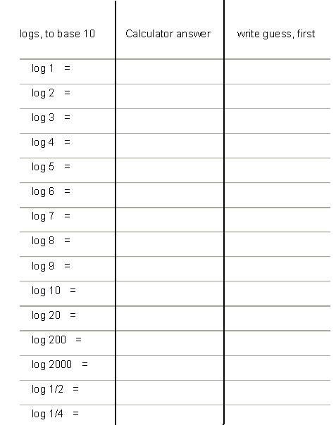
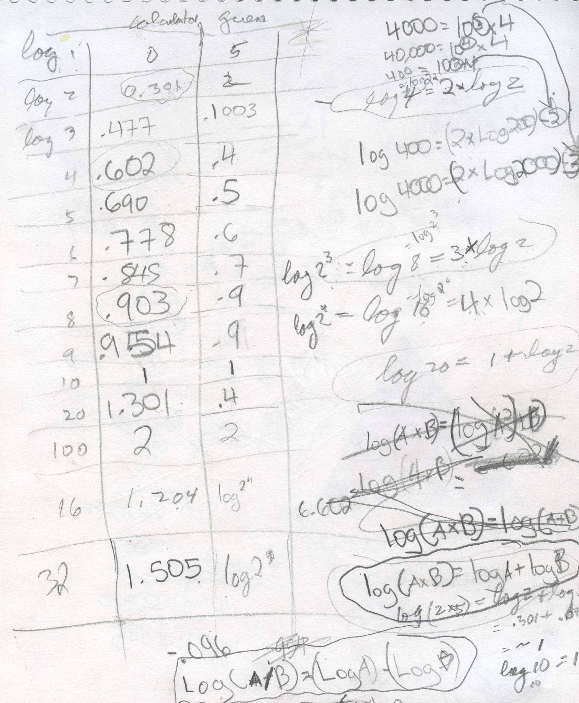
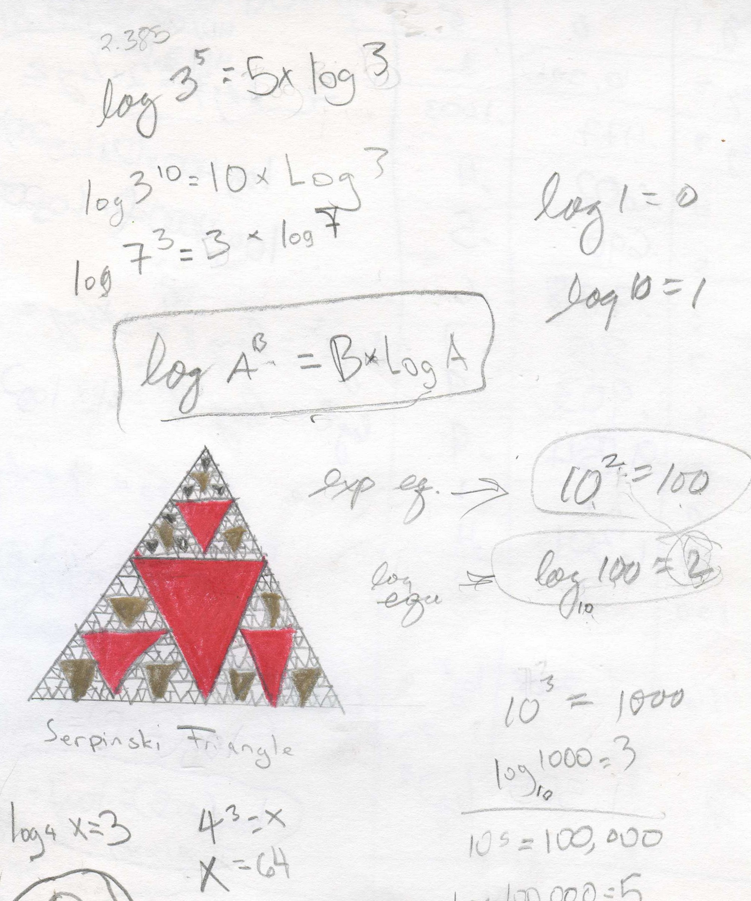
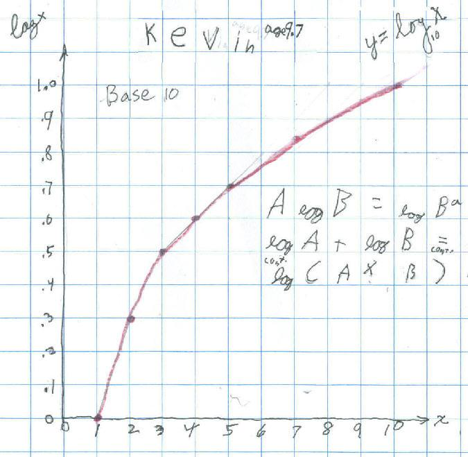

Logarithms(logs)/Chapter 13
Make a table like that below. Guess what
the
log 1 is first, (read as the log of 1, base 10), and put your guess in the table in
the right-hand column, even though you probably don't know what a log is! Then
use a calculator to get the log 1, to 3 decimal places- put that in the center
column, under 'calculator answer'. Then guess what the log 2 is. Put that number
in the right-hand guess column. Use the calculator to get the log 2 to 3 decimal
places- put that under 'calculator answer'. Fill in the rest of the table this
way, and
look for patterns as you go.

Remember, Kavi didn't know anything about logs. When he got to log 4 = .602 Don asked if he saw anything. How did this relate to log 2 = .301? He wrote log 4= 2* log 2= log 22 . Do you see another one like this?

Looking for patterns, Kavi found three identities above and below:
Identity # 1.) log (A*B)= log A + Log B
Identity # 2.) log (A/B)= log A - Log B, and
Identity # 3.) log AB = B*log A and
Identity # 4.) logA A = 1
These idendities work for any base.
Don also talked with Kavi about the
exponential equation: 102 = 100 and the
corresponding log equation: log10 100 = 2
The exponent 2 is the log; generalizing logB x = y Read: the log of x, base B = y and By = x
Notice: log10 10 = 1 because 101 = 10 and loge e = 1 (e is the
base of the natural logarithms) and logA A = 1.
And log10 1 = 0 because 100 = 1, and loge 1 = 0 and logA 1 = 0
He also found he could solve the equation: log4 x = 3, then x = 43 = 64.


What happens to the graph when x = 1/2 ?
What about the log7 8 = x ? Your calculator only has base 10 or base e logs, not base 7!
Write log7 8 = x as an exponential equation 7x = 8, then take
the log of both sides, to base 10, (or base e) to get
log10 7x = log10 8 using the identity # 3.,
log10 AB = B*log10 A , we get x*log10 7 = log10 8 Now we
can solve for x by dividing both sides by log10 7, to get
x = log10 (8)/log10(7) or
x = ln (8)/ln (7)
Either calculation, you get the same answer and we can find the log of a number in any base!
Don told Kevin about how the logarithm was invented by Napier (along with some others), and the result was to vastly increase the computational powers of astronomers like Tycho Brahe and Kepler. That was because products are changed into sums using Kevin's identity log10A + log10 B = log10(AxB) and when one is dealing with large numbers, as with distances to the moon and sun, it it much simpler to add the logs, than multiply the numbers. [Also the log10 1000000 = 6.]
When students get to this point Don will usually asks them, what is the ln(-1)? Try it on your calculator.
ln(-1) = pi*i which is an imaginary number. When we write this as an exponential equation, we get EPi*i = -1 , add 1 to both sides
Epi*i + 1 = 0
We end up with a true statement with the 5 most important numbers in mathematics: E, pi, i, 1 and 0. WOW!!
See how the area under these 2 curves y=1/x and y = 1/(1+x) lead to logs